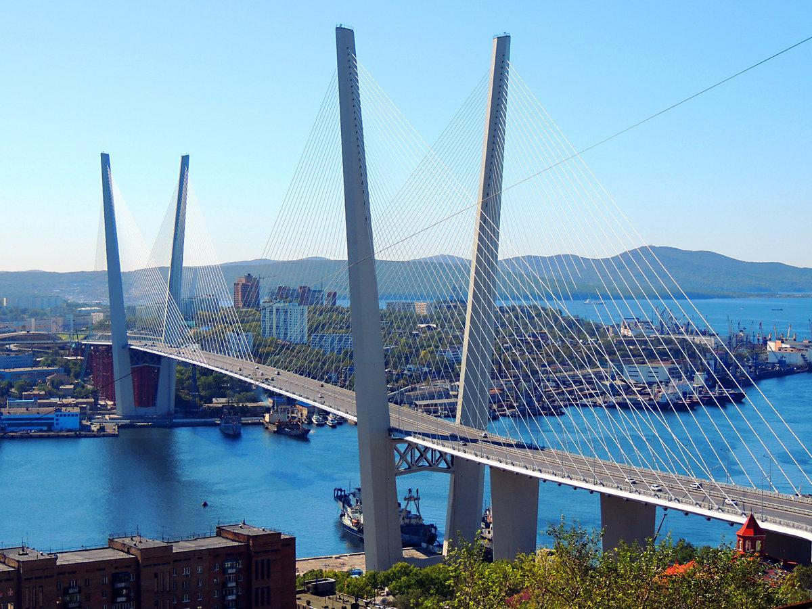
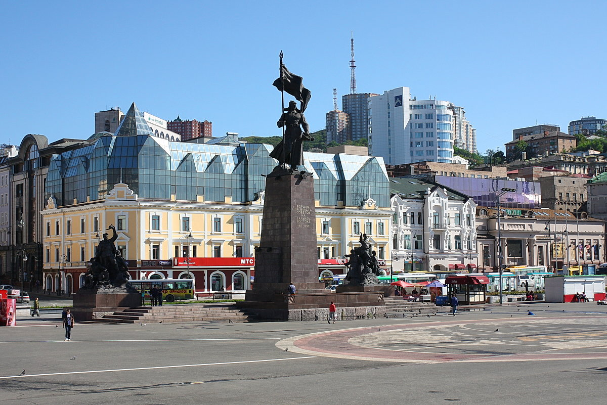
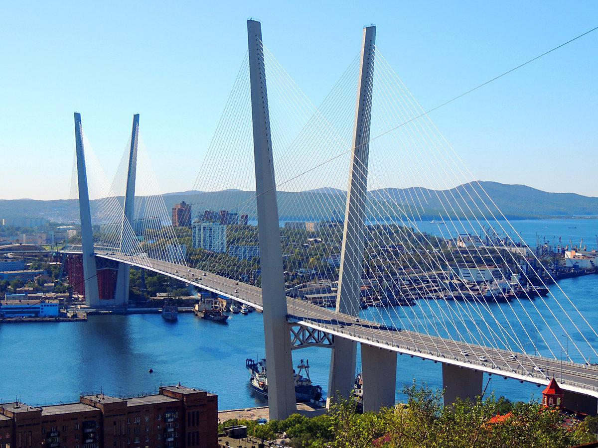
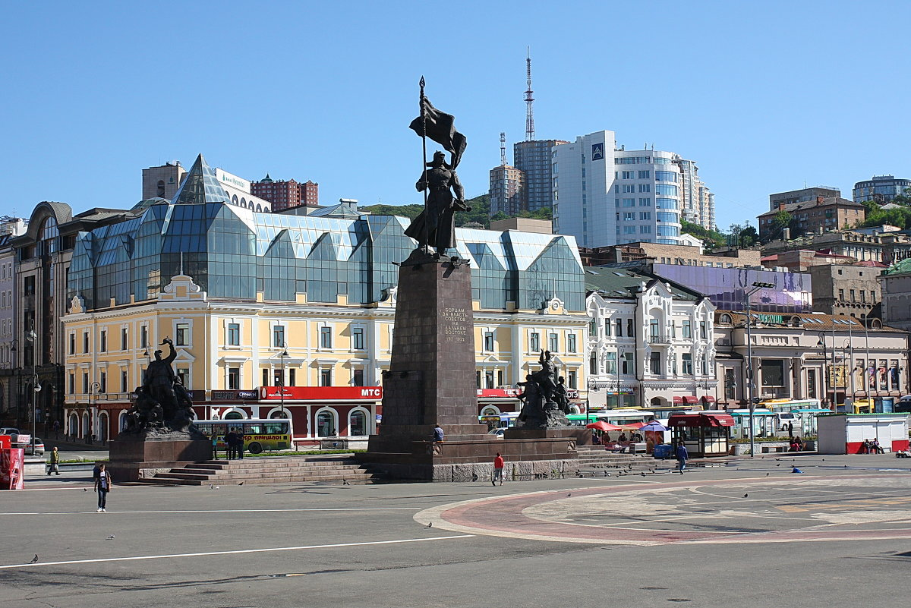
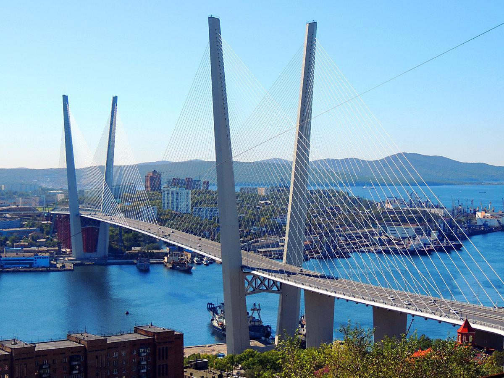
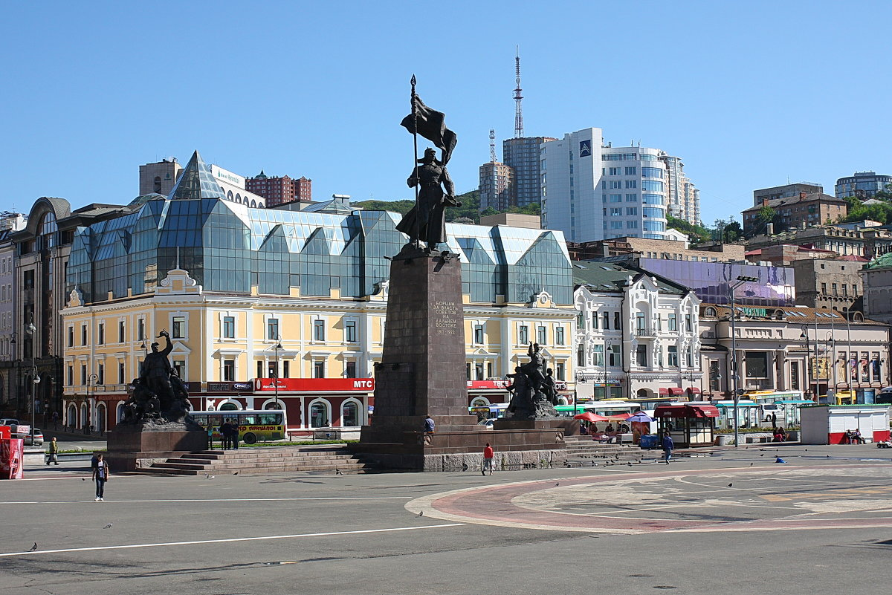

Главная | Золотой мост | Расписание экскурсий


Владивосток — крупнейший портовый город на Дальнем Востоке России, административный центр Приморского края.
Город раскинулся на семи холмах и омывается водами Японского моря.
Здесь сочетаются история, природа и современная инфраструктура.
Форт №7
Форт № 7 Северного отдела обороны Владивостокской крепости (полуостров Муравьёва-Амурского) был спроектирован
и возводился в рамках строительства новой главной линии сухопутной обороны крепости в 1910–1917 годах. Он расположен
в районе нынешнего Академгородка на высоте 77 метров (горы Торопова).
Золотой мост
Золотой мост - вантовый мост через бухту Золотой Рог во Владивостоке. Был построен в рамках программы подготовки города
к проведению саммита АТЭС, открытие состоялось 11 августа 2012 года. Является одной из главных достопримечательностей города.
Длина моста — 1388,09 м.
Число полос движения — 6.
Подмостовой габарит по высоте — 64,25 м.
Высота пилонов от уровня ростверков — 226,25 м.
Морской вокзал

Морской вокзал — вокзальный комплекс в центральном районе города Владивостока. Построен в 1959—1964 годах.
Автор проекта — архитектор П. И. Бронников. Историческое здание на Нижнепортовой улице, 1 сегодня является объектом
культурного наследия Российской Федерации. Примыкает к железнодорожному вокзалу Владивостока.
Океанариум «Аквамир»
Приморский океанариум — океанариум во Владивостоке, расположенный на острове Русский. Является частью Национального
научного центра морской биологии им. А. В. Жирмунского Дальневосточного отделения Российской академии наук.
Открыт 6 сентября 2016 года.
Владивосток был основан в 1860 году как военный пост. Название «Владивосток» означает «владеющий Востоком». Город играл важную роль в защите российских рубежей на Тихом океане.
Владивосток — самый восточный город России с населением более 500 000 человек.
Здесь проходит международный кинофестиваль «Меридианы Тихого».